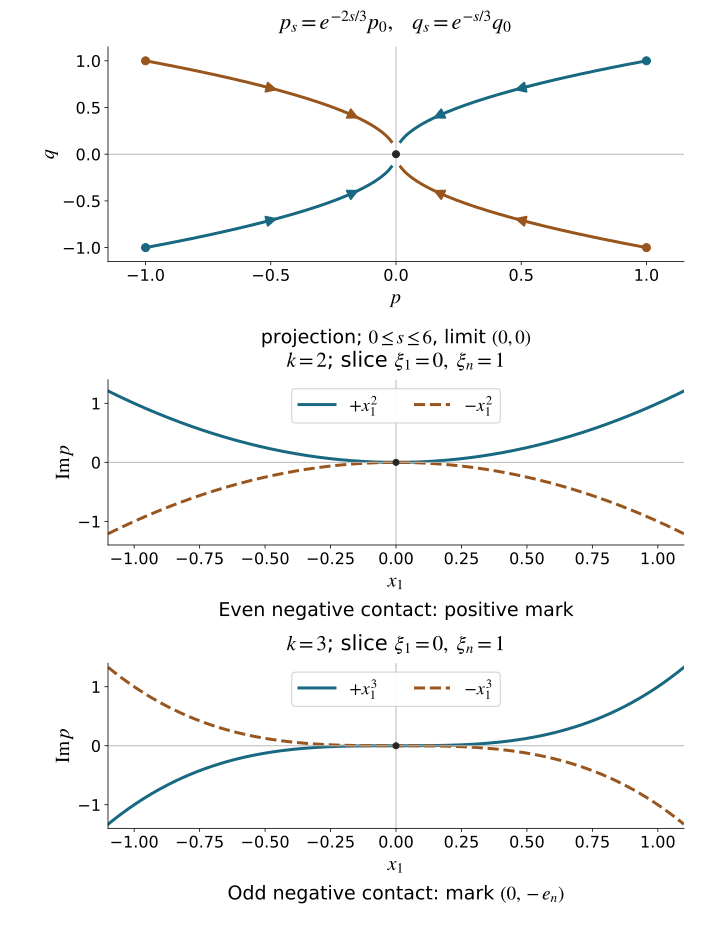

A canonical coordinate change preserves Poisson brackets. Multiplication by a nonzero function gives additional freedom, and for a complex symbol that freedom can remove an entire sequence of transverse errors. We develop the local models, including the exact marked covector, the homogeneity of every multiplier, and the distinction between a simple bracket and fixed higher contact.
We retain the conventions and geometry of Phase space and generating families, the nonzero restricted primitive theorem in Homogeneous submanifold normal forms, and the full coordinate completion in Prescribed canonical coordinates and isotropic fibers. The exact prerequisites are finite-coordinate flows, NF1–NF7, tangent and commuting flows, F0–F1, and inverse and implicit functions, P2–P3. The measure and norm proofs, M3–M8 give Fatou, dominated convergence, product integration, completeness and smooth density; Fourier proofs L1–L3 give the actual inverse maps, distributional compatibility and measurable multipliers. B1–B2 prove the weighted Fourier norms and their local frequency estimate. The proof map supplies exact locators and all earlier inputs. Section 4 proves smooth division by a complex function of one real variable, using an almost-analytic extension and a smooth complex root. The geometric source is Hörmander III, Section 21.3, Theorems 21.3.1–21.3.6, including the proof ending on; the division theorem is credited to Hörmander I, Theorem 7.5.6. These are the exact approved purchased editions; their use and ordinary citations are valid. The present proof supplies the needed one-variable division and parameter solver.
Write
ω=j∑dξj∧dxj,ιHfω=−df,{f,g}=Hfg,R=j∑ξj∂ξj.(1.1)
Thus Hξj=∂xj, Hxj=−∂ξj, and {ξj,xk}=δjk. A function of degree m satisfies Rf=mf. Its Hamilton field satisfies
[R,Hf]=(m−1)Hf,deg{f,g}=degf+degg−1.(1.2)
The first identity follows by differentiating the coordinate expression for Hf; the second follows either from that expression or by applying R to the bracket.
Fix c∈T∗Rn∖0. Our changes are multiplication p↦ap by a nowhere zero smooth homogeneous complex function and a local homogeneous canonical map χ, with the convention that χ carries model coordinates to a neighborhood of c. All conclusions are local conic germs. The multiplier can change degree: if p has degree m, multiplying by ∣ξ∣1−m makes it degree one.
Theorem 1.1 (real principal-type model). Suppose p is real, smooth and homogeneous of degree one, p(c)=0, and Hp(c) and R(c) are independent. There are homogeneous canonical coordinates, with c represented by (0,en), such that
χ∗p=ξ1.(1.3)
Proof. Prescribe the degree-one momentum p1=p, no position coordinates, and the marked values pj(c)=δjn, qj(c)=0. The homogeneous coordinate-completion theorem applies precisely because the given Hamilton field and R are independent. Its unused position index is n, whose prescribed momentum is nonzero. The completed coordinate map has the stated mark and retains p as an actual function. Its inverse is χ. □
The hypothesis includes the marked compatibility. In dimension one it cannot hold at a zero: dp(R)=p=0, so Hp and R lie in the same one-dimensional symplectic orthogonal. For example p=xξ near (0,1) has Hp=−R at its zero. A homogeneous transformation could not turn this zero into the model momentum at (0,e1), where that momentum equals one.
If a real symbol initially has degree m, the positive preliminary multiplier scales its Hamilton field at a zero by a positive number, so it preserves nonradiality and gives (1.3) for the multiplied symbol.
2. A positive weighted bracket normalizer
The complex models will require a pair of functions with bracket one. A scalar multiplier can accomplish this even when the functions have fractional degrees.
Theorem 2.1 (weighted normalization). Let p,q be real smooth functions on a symplectic manifold, p(c)=q(c)=0, and C={p,q}>0 near c. If α,β>0 and α+β=1, there is a unique positive smooth local germ u such that
{uαp,uβq}=1.(2.1)
In a conic symplectic manifold, if p,q have degrees m,m′, this germ extends homogeneously with
degudeg(uαp)deg(uβq)=1−m−m′,=α(1−m′)+βm,=αm′+β(1−m).(2.2)
Proof. The full product rule, using α+β=1, gives
{uαp,uβq}=Cu+Vu,V=βqHp−αpHq.(2.3)
The two normal coordinates are independent because C=0. Put X=V/C. Crucially,
Xp=αp,Xq=βq.(2.4)
Choose submersion coordinates (p,q,z) near c. The field X vanishes when p=q=0. Taylor division therefore writes its tangential component as pA+qB, with A,B smooth vector functions. For its backwards flow Φ−s,
psz˙s=e−αsp,qs=e−βsq,=−e−αspA(ps,qs,zs)−e−βsqB(ps,qs,zs),s≥0.(2.5)
Take nested relatively compact z neighborhoods, with the smaller closure inside the larger. Bounds for A,B on the larger box give
∣zs−z0∣≤K(∣p∣/α+∣q∣/β).(2.6)
Make the initial normal box small enough that this bound is less than the distance between the two z boundaries. The backwards orbit remains in the larger box for every s, so the local flow extends to all s≥0. The integrable right side of (2.5) also makes zs converge.
We need estimates for every derivative in the initial data, not only orbit convergence. In the nonautonomous z equation, each derivative of its right side with respect to (p,q,z) is bounded by Kle−δs, where δ=min(α,β)>0, on the fixed box. First derivatives of zs satisfy a linear equation whose coefficient has finite integral and whose forcing is integrable. The integral inequality gives a uniform bound in s. Explicitly, if y(s)≤B+∫0sa(t)y(t)dt, where B bounds the initial value and the total forcing integral and a≥0 is integrable, put Y(s)=B+∫0sa(t)y(t)dt. Then Y′≤aY, so multiplication by exp(−∫0sa) and the fundamental theorem give y(s)≤Bexp(∫0∞a). Replace B by B+ϵ and let ϵ↓0 if B=0. Apply this to the norms of the differentiated finite-time integral equations from NF2–NF5. The bound does not depend on the final time. Inductively, a derivative of order l satisfies the same linear equation, plus a finite sum of products of bounded lower derivatives with derivatives of the right side. That forcing is again integrable. Thus every finite-order derivative of zs is uniformly bounded on a smaller initial box. The explicit derivatives of ps,qs have the same property.
Define
u(w)=∫0∞e−sC(Φ−sw)1ds.(2.7)
The positive function C has upper and lower positive bounds on the larger box. The derivative estimates just proved allow differentiation of (2.7) to every order, with an integrable bound Kle−s. Consequently u is smooth and positive, and u∣{p=q=0}=1/C.
To verify the equation, put F=1/C. Differentiation along X, followed by integration by parts, gives
Xu=−∫0∞e−s∂s(F∘Φ−s)ds=F−u.(2.8)
Thus Cu+Vu=1, as required. If v+Xv=0, then
v(Φ−sw)=esv(w).(2.9)
Shrink the initial box so the entire backwards orbit lies in the domain of the proposed smooth germ v. Its closure is compact there, so v is bounded on the orbit. Letting s→∞ in (2.9) gives v(w)=0. This proves uniqueness of the scalar equation among all smooth germs and hence uniqueness in (2.1).
For the conic assertion let δt multiply covectors by t>0. Pullback of a bracket under δt obeys
{δt∗f,δt∗g}=tδt∗{f,g}.(2.10)
Set d=1−m−m′. Applying (2.10) to (2.1) shows that t−dδt∗u satisfies that same equation, since the powers of t in the bracket cancel. Uniqueness gives δt∗u=tdu for t close to one on a common germ. Extend along the positive covector ray; these identities make the local extensions agree on overlaps. Equation (2.2) follows by adding degrees. □
The formula remains local in the tangential variables. The backwards time is unbounded, but estimate (2.6) keeps the entire integral inside a fixed local neighborhood. No data are prescribed on the singular fixed set beyond the forced value 1/C.
3. A nonzero complex bracket and its marked sign
Write p=p1+ip2, with real pj. At a zero of p, every derivative of a scalar multiplier a is accompanied by a factor p or pˉ, so
{Re(ap),Im(ap)}=∣a∣2{p1,p2}on p=0.(3.1)
The sign of a nonzero bracket is therefore invariant under our changes.
We first supply the homogeneous auxiliary momentum used in this and the higher-contact construction.
Lemma 3.1 (a commuting positive momentum). Suppose ϕ,ψ are real homogeneous functions of degrees a,b, a+b=1, ϕ(c)=ψ(c)=0, and {ϕ,ψ}=1. There is a positive degree-one function h, with h(c)=1, such that
{ϕ,h}={ψ,h}=0.(3.2)
Moreover
P=hbϕ,Q=h−bψ,h(3.3)
can be retained as the first momentum, first position and last momentum of a homogeneous canonical coordinate system with mark (0,en).
Proof. The fields Hϕ,Hψ commute because their bracket is the Hamilton field of the constant one. Their span is symplectic: ω(Hϕ,Hψ)={ϕ,ψ}=1. The zero set Z={ϕ=ψ=0} is a transverse section for their two commuting flows. The radial field lies in TZ, and is nonzero there. Choose a positive degree-one function h0 on Z, equal to one at c, by using a transverse section to its radial flow and extending its positive datum.
The product of the two Hamilton flows from Z is a local diffeomorphism. Extend h0 constantly in both flow times. This proves (3.2), positivity and the marked value. Dilations carry each flow to the same flow with a rescaled time, because of (1.2), and carry Z to itself. The extension of t−1δt∗h has the same datum and the same two zero transport equations as h. Flow uniqueness proves its equality to h. Thus h has degree one.
The product rule in (3.3) gives
{P,Q}=1,{P,h}={Q,h}=0,degP=1,degQ=0.(3.4)
At c, HP=Hϕ, HQ=Hψ. The field Hh is orthogonal to their symplectic span and nonzero, since dh(R)=h=1. If R were in the span of these three fields, pairing with HP,HQ would force its first two coefficients to vanish. Then R would be a multiple of Hh, contradicting dh(R)=1 and dh(Hh)=0. Hence the three prescribed Hamilton fields and R are independent. The homogeneous coordinate theorem applies with Q=q1, P=p1, h=pn, and the unused position index n, whose momentum value is one. It completes the coordinates and preserves these functions exactly. □
Theorem 3.2 (simple complex normal form). Let p be smooth and homogeneous near c, p(c)=0, and {p1,p2}(c)=0. There is a nonzero homogeneous multiplier a and a homogeneous canonical map such that
χ∗(ap)=ξ1+ix1ξn.(3.5)
The model mark is (0,en) for positive bracket and (0,−en) for negative bracket.
Proof. The nonzero bracket makes dp1,dp2 independent. Homogeneity gives dpj(R)=0 at the zero. The nondegenerate Hamilton plane therefore cannot contain R; in particular the fields and the radial direction are independent.
First make the degree one by a positive multiplier, which preserves the bracket sign at the zero. In the positive case apply Theorem 2.1 with weights 1/2,1/2. Then
ϕ=u1/2p1,ψ=u1/2p2,{ϕ,ψ}=1,degϕ=degψ=21.(3.6)
Lemma 3.1 with b=1/2 provides coordinates
η1=h1/2ϕ,y1=h−1/2ψ,ηn=h.(3.7)
Their exact identity is
h1/2u1/2p=η1+iy1ηn.(3.8)
All factors are positive smooth on the chosen conic germ; the multiplier has the required degree.
For negative bracket perform the positive construction on pˉ, then conjugate the resulting identity. This gives η1−iy1ηn at (0,en). The simultaneous canonical flip (yn,ηn)↦(−yn,−ηn) produces (3.5) at (0,−en). The model's bracket at either mark is ξn=±1, so (3.1) also proves that the two marked signs cannot be exchanged by an admissible equivalence at the same mark. □
4. Remove one momentum from the imaginary part
Smooth complex division. If a complex C∞ function F(t,z), with real t,z, has F(0,0)=0 and ∂tF(0,0)=0, then every smooth G(t,z) has a representation
G=QF+S(z)(4.1)
on a neighborhood chosen from F and the original domain, with Q,S smooth and complex valued. The remainder is independent of t. This is the k=1 case of Hörmander I, Theorem 7.5.6; its hypotheses are those of Theorem 7.5.5. Neither the quotient nor the remainder is asserted to be unique. The following proof treats complex functions in real variables; it does not assume that their real zeros form a parameter graph.
Proof. First extend a smooth function a(t,z) almost analytically in t. Multiply it by a fixed real cutoff equal to one on the patch in use. For v=t+iw, choose a fixed smooth cutoff χ, equal to one near zero, and put
A(t+iw,z)=k=0∑∞χ(w/εk)k!(iw)k∂tka(t,z).
All coefficients and their derivatives are bounded on a fixed larger compact patch. A derivative of total order l<k of the k-th term is bounded by Cklεkk−l. Choose positive radii decreasing to zero so that these bounds are at most 2−k for every l≤k/2. Each fixed derivative series then converges uniformly after finitely many terms. The sum is smooth on a fixed complex domain; only the radii and its seminorm bounds depend on a. Its normal jets at w=0 are the formal analytic jets. Thus, with ∂vˉ=(∂t+i∂w)/2, Taylor's integral remainder gives
A(t,z)=a(t,z),∣Dβ∂vˉA(t+iw,z)∣≤CβL∣w∣Lfor every β,L.
The derivatives here include all real parameters z. No holomorphic continuation of an arbitrary smooth function is claimed.
Apply this construction to F, writing its extension as F(v,z). At the mark, its real derivative in (t,w) is complex multiplication by λ=∂tF(0,0)=0. In particular it is invertible. A direct parameter argument produces a smooth complex root T(z), with T(0)=0. Indeed the real map
v⟼v−λ−1F(v,z)
has derivative zero at the mark. On a sufficiently small closed complex disc its derivative norm is at most q<1, uniformly on a smaller parameter patch. Shrink that patch so that its value at v=0 has modulus at most (1−q)/2 times the disc radius. It maps the disc into itself and its fixed point lies in the interior. Iteration from zero has geometrically summable successive differences, so completeness of C gives its unique fixed point T(z). The same contraction estimate first bounds parameter differences of T by a constant times the parameter differences. Taylor's formula in the fixed-point identity then proves differentiability, with real derivative
DzT=−(DvF(T,z))−1DzF(T,z).
The inverse exists throughout the disc by the contraction bound. This formula has continuous coefficients. Induction differentiating it proves smoothness of every order. Thus F(T(z),z)=0, with no real-zero or holomorphic-root assumption.
We next divide by the known graph t−T(z). For any almost-analytic extension A as above, the segment vs=T+s(t−T) stays inside its fixed domain after one shrink depending on T. Set R(z)=A(T(z),z). The full real chain rule gives
a(t,z)−R(z)U0E=(t−T(z))U0(t,z)+E(t,z),=∫01(∂v+∂vˉ)A(vs,z)ds,=2iImT(z)∫01∂vˉA(vs,z)ds.
The sign and the error term follow from t−T=(t−T)+2iImT. Every derivative of E is bounded by every positive power of ∣ImT∣, because the imaginary part of vs is (1−s)ImT and the antiholomorphic derivative has all the preceding flat estimates. Put s0=∣t−T(z)∣2≥∣ImT∣2. For s0>0, define
e(t,z)=s0t−T(z)E(t,z).
Each derivative of this expression costs only finitely many negative powers of s0. The arbitrary positive powers in the bounds for E absorb them, so every derivative tends to zero faster than every power of s0. Its zero extension across s0=0 is smooth even if that zero set is singular: multiply the expression by a smooth cutoff vanishing for s0≤δ and equal to one for s0≥2δ. On the transition region all differentiated cutoff factors cost finitely many powers of δ−1, while the flat estimates give arbitrarily many positive powers. These smooth functions and all their derivatives converge uniformly to the zero extension. The fundamental theorem of calculus identifies those derivative limits with the derivatives of the limit. Consequently
a=(t−T)(U0+e)+R(z)
holds smoothly and exactly, including real zeros of the graph.
For a=F, use the particular extension F which constructed T. Its remainder is zero, so F=(t−T)U. Differentiating at the mark gives U(0,0)=∂tF(0,0)=0; shrink once so U never vanishes. Apply the same graph division to a=G, obtaining G=(t−T)V+S(z). Then Q=V/U proves (4.1). The real and complex neighborhoods were fixed before choosing G; its extension radii and coefficient bounds may depend on G. This proves exactly the needed common-neighborhood division. □
Example (a nonreal root). For F(t,z)=t−iz and G(t,z)=t2, the root is T(z)=iz, and the exact division is
t2=(t+iz)(t−iz)−z2.
The remainder depends only on z. For z=0 there is no real root in t; the proof uses the smooth complex root instead.
Theorem 4.1 (one-momentum reduction). Suppose p is smooth and homogeneous, p(c)=0, and HRep(c) is independent of R(c). There are a nonzero homogeneous multiplier a and homogeneous canonical coordinates at (0,en) such that
ap=η1+if(y,η′),η′=(η2,…,ηn).(4.2)
The smooth real f has degree one and is independent of η1.
Proof. Make p degree one by a positive multiplier. Theorem 1.1 then makes Rep=ξ1 at the mark (0,en). In particular ∂ξ1p=0.
Apply (4.1) to divide the real function ξ1 by p:
ξ1=qp+r,r=r1+ir2,∂ξ1r=0.(4.3)
For homogeneity, perform this division on the positive ξn=1 slice, in the real variable ξ1/ξn, with all remaining slice coordinates as parameters. Extend q to degree zero and r to degree one. This preserves (4.3). At the mark r=0, and differentiation in ξ1 gives q(c)=1/∂ξ1p(c)=0. Shrink so q is nonzero.
Prescribe
y1=x1,η1=ξ1−r1.(4.4)
These functions have degrees zero and one and bracket {η1,y1}=1. At the mark R has its nonzero last-momentum component, Hy1=−∂ξ1, and Hη1 has x1 component one. Thus their fields and R are independent. The homogeneous coordinate theorem completes them with mark (0,en).
Equation (4.3) becomes qp=η1−ir2. The identity Hy1r2=−∂ξ1r2=0 is invariant under the coordinate change. In the new coordinates Hy1=−∂η1, so f=−r2 is independent of η1, as asserted. The product of q and the initial positive multiplier is a. □
The function f may depend on y1. That dependence carries the contact information in the next section.
Let p=p1+ip2, p(c)=0, and Hp1(c)=0. The hypersurface V1={p1=0} is foliated by its nonzero Hamilton field. We assume a fixed integer k>1: in a small flow box, p2 has a zero of exactly order k on every nearby Hamilton curve. On the resulting nearby zero set,
Hp1jp2=0(0≤j<k),Hp1kp2=0.(5.1)
The assumption includes existence of the fixed-order zero on each nearby curve. A single nonzero kth derivative at c, or a statement concerning only those curves that happen to have zeros, is insufficient.
Lemma 5.1 (the smooth zero set and its brackets). Under this assumption the zero set V={p1=p2=0} is smooth of codimension two. Near V, choose a smooth function g with {p1,g}=0 such that
p2=bp1+c0gk,c0=0.(5.2)
On V, Hp2=bHp1, and every iterated Poisson bracket of at most k factors chosen from p1,p2 vanishes.
Proof. Use flow-box coordinates (t,z) on V1, with Hp1=∂t. The function ∂tk−1p2 has a simple zero at c. The implicit function theorem gives its unique nearby zero graph t=T(z). The fixed-order zero supplied on each nearby curve has all lower derivatives zero and must therefore be this graph. Shrinking the flow box, Taylor's formula below also shows that there are no other zeros in it.
All derivatives of order <k vanish on this graph. Taylor's integral formula gives
p2(t,z)=(t−T(z))k(k−1)!1∫01(1−s)k−1∂tkp2(T(z)+s(t−T(z)),z)ds(5.3)
on V1. The last factor is smooth and nonzero. Extend g=t−T(z) and that factor to a neighborhood of V1. The difference between p2 and c0gk vanishes on p1=0, so real Taylor division gives (5.2). Its zero set is {p1=g=0}, and the two differentials are independent because {p1,g}=0. Since k>1, differentiating (5.2) on V gives dp2=bdp1, proving the Hamilton-field identity.
For the bracket assertion put
Dj=(p1,gj),1≤j≤k,D0=C∞.(5.4)
These are ideals of smooth local functions. Direct product rules give
Hp1Dj⊂Dj−1,Hp2Dj⊂Dj−1.(5.5)
For the second inclusion use
Hp2=bHp1+p1Hb+c0kgk−1Hg+gkHc0.(5.6)
The only potentially low-order contribution of gk−1Hg acting on p1A+gjB is gk−1{g,p1}A, and k−1≥j−1. The other terms retain p1 or at least gj−1.
Both p1,p2 lie in Dk. A right-nested bracket of ℓ factors lies in Dk−ℓ+1; for ℓ≤k this vanishes on V. Any bracket tree is a linear combination of right-nested brackets with the same factors: apply the Jacobi identity to move a bracket in the first argument successively to the right, and induct on its number of internal brackets. This proves the assertion for every tree. □
Theorem 5.2 (finite-contact multiplier law). For every smooth complex multiplier a=A+iB, on V,
HRe(ap)kIm(ap)=∣a∣2(A−bB)k−1Hp1kp2.(5.7)
If a=0 and A−bB=0, the transformed symbol has the same fixed order k. For odd k its kth derivative sign is unchanged.
Proof. Put F=A−bB, G=B+bA, and write (5.2) as
f=Re(ap)=Fp1−Bc0gk,v=Im(ap)=Gp1+Ac0gk.(5.8)
The product rule extends (5.5) to HfDj⊂Dj−1. Indeed Hf=AHp1−BHp2+p1HA−p2HB, and the last two terms acting on Dj still lie in Dj−1. Thus Hfk−1(p1U+p2W) vanishes on V for arbitrary smooth U,W.
The full first bracket has the form
{f,v}=(A2+B2){p1,p2}+p1U+p2W.(5.9)
This follows by expanding all factors; every term differentiating A or B contains p1 or p2. Also
{p1,p2}=p1{p1,b}+gk{p1,c0}+kc0gk−1{p1,g}.(5.10)
After k−1 applications of Hf, the first two terms and all extra terms in (5.9) vanish on V. In the last term, every surviving derivative must hit a different one of its k−1 factors g; a derivative hitting its coefficient would leave a zero factor. Since Hfg=FHp1g on V, the result is
∣a∣2k!c0Fk−1(Hp1g)k.(5.11)
The same Taylor product rule gives Hp1kp2=k!c0(Hp1g)k. This proves (5.7) with all differentiated multiplier terms accounted for.
If F=0, the equation f=0 solves p1=(Bc0/F)gk. On that hypersurface,
v=Fc0∣a∣2gk.(5.12)
Its factor is nonzero, and Hfg=FHp1g=0 on the zero set. Here df=Fdp1=0 on V, so the implicit function theorem makes f=0 a smooth hypersurface. Inside it, g=0 is transverse to Hf. The transverse-flow chart F0 identifies a neighborhood with a time interval times that zero section. Thus every nearby Hamilton curve meets it, and (5.12) gives exactly a kth-order zero there. If k is odd, k−1 is even, so the factor in (5.7) is positive. If F=0, Hf=0 on V; that case fails the nonzero real-field hypothesis. □
Theorem 6.1 (fixed-contact model). Let p=p1+ip2 be homogeneous and satisfy the fixed-order hypothesis of Section 5 with k>1. There is a nonzero homogeneous multiplier and a homogeneous canonical map such that
χ∗(ap)=ξ1+ix1kξn.(6.1)
The mark is (0,en), except when k is odd and Hp1kp2(c)<0; that case has mark (0,−en). The exceptional negative odd case cannot have the displayed model at the positive mark.
Proof. First Hp1(c) cannot be radial. If it were a nonzero multiple of R(c), homogeneity would make its field radial along the covector ray through c. Flow uniqueness would keep its orbit on that ray. Since p2 vanishes along the ray, it would have infinite, rather than finite, zero order on this orbit.
A positive preliminary degree change gives degree one and preserves the nearby Hamilton curves in p1=0, their zero order and the leading derivative sign. Use Theorem 1.1 to make p1=ξ1, then Theorem 4.1 to reduce the symbol to
p=η1+if(y,η′),∂η1f=0.(6.2)
We check that the division multiplier is admissible for finite contact. On V, Hp2=bHξ1, so ∂ξ1p=1+ib. The multiplier q in (4.3) satisfies q(c)=(1+ib(c))−1. Therefore
Req(c)−b(c)Imq(c)=1.(6.3)
It stays nonzero after shrinking. Theorem 5.2 preserves fixed contact, and its positive factor at c preserves the kth derivative sign in this particular reduction. Canonical changes preserve all the Hamilton identities.
Rename these coordinates (x,ξ). The equation ∂x1k−1f=0 has a unique nearby solution
x1=X(x′,ξ′),x′=(x2,…,xn),(6.4)
by the nonzero kth derivative. Each nearby Hξ1=∂x1 curve has its fixed-order zero there. Because f is independent of ξ1, this describes it for all ξ1 in the patch. Its lower derivatives all vanish on the graph. Taylor's formula gives
f=(x1−X)kF,F=(k−1)!1∫01(1−s)k−1∂x1kf(X+s(x1−X),x′,ξ′)ds.(6.5)
Uniqueness of the graph and homogeneity give degX=0, degF=1. Initially assume the kth derivative is positive. Then F>0, and
g=(x1−X)F1/k,f=gk,degg=k1,{ξ1,g}(c)=F(c)1/k>0.(6.6)
This is a signed smooth coordinate; taking a nonnegative root of f would lose that property.
Apply Theorem 2.1 to ξ1,g with
α=k+1k,β=k+11.(6.7)
The normalizer has degree −1/k. The functions ϕ=uαξ1, ψ=uβg have degrees α,β and bracket one. Lemma 3.1 supplies h>0, degree one and commuting with them, and retains
η1=hβϕ,y1=h−βψ,ηn=h(6.8)
as canonical coordinates at the positive mark. The exact identity, including its multiplier, is
uαhβ(ξ1+igk)=η1+iy1kηn.(6.9)
Indeed kβ=α and 1−kβ=β. The product uαhβ has degree zero.
For negative kth derivative, apply the positive construction to pˉ and conjugate the resulting identity. This gives η1−iy1kηn for a nonzero multiplier times p, at (0,en). If k is even, multiply by −1 and flip the canonical pair (y1,η1); the result is the positive displayed model at that same mark. If k is odd, flip the last pair (yn,ηn); the result is (6.1) at (0,−en). For odd k, (5.7) has positive factor for every admissible multiplier and the positive model has kth derivative k!>0. This proves the obstruction at the positive mark. □
7. A smooth elliptic solver with parameters
The remaining normal form has a complex Hamilton field tangent to a two-dimensional characteristic leaf. Solving it needs a common open set for all transverse parameters and all derivative orders. We prove that input.
Lemma 7.1 (two-variable parameter solvability). Let
Lλ=a(x,λ)∂x1+b(x,λ)∂x2(7.1)
have smooth complex coefficients, where x∈R2 and λ∈Rd. Suppose the real map (τ1,τ2)↦a(0,0)τ1+b(0,0)τ2 is invertible. Every smooth f(x,λ) has a joint smooth local solution Lλu=f on a fixed smaller product neighborhood. The solution can be chosen linearly and continuously in f in the smooth seminorms on fixed compact subsets.
Proof. A real linear change of x, followed if needed by a fixed nonzero scalar, makes the frozen operator L0=∂x1+i∂x2. Put z=x1+ix2. The locally integrable function
E(z)=2πz1(7.2)
is its distributional fundamental solution. Here is a direct real-variable calculation of the constant. In polar coordinates L0=eiθ(∂r+ir−1∂θ), while E=e−iθ/(2πr) is locally integrable. For a test function φ supported inside the disk of radius R, polar substitution gives the punctured distributional pairing as −(2π)−1∫εR∫02π[∂rφ+ir−1∂θφ]dθdr. Periodicity makes the angular derivative integral zero. The radial fundamental theorem leaves (2π)−1∫02πφ(ε,θ)dθ, which tends to φ(0) by continuity. The omitted disk contribution tends to zero since E is locally integrable and L0φ is bounded. Thus L0E=δ0, with the stated factor and sign.
Choose a compact smooth cutoff ρ, equal to one on ∣z∣≤1, and let F=ρE, Tg=F∗g. Then
L0F=δ0+G,G=(L0ρ)E∈Cc∞,suppG∩{∣z∣<1}=∅.(7.3)
Our Fourier convention gives
(iτ1−τ2)F=1+G.(7.4)
Since F∈L1 and G∈L1, this identity yields
∣F(τ)∣≤1+∣τ∣C.(7.5)
For high frequencies use ∣iτ1−τ2∣=∣τ∣; for bounded frequencies use ∥F∥1. Plancherel proves that T:Hs→Hs+1 is bounded for every real s, and that both ∂xjT are bounded on L2. Constant derivatives commute with T. To identify this multiplier with the actual convolution, weighted Cauchy–Schwarz gives ∣F∗g(x)∣2≤∥F∥1∫∣F(y)∣∣g(x−y)∣2dy; Tonelli and translation give ∥F∗g∥2≤∥F∥1∥g∥2. For compact smooth g, Fubini proves its Fourier transform is Fg. Approximate any L2 input by the compact smooth functions of M7. Both the convolution bound and the Fourier multiplier bound pass to that limit, so the two operators coincide. Distributional differentiation, or their Fourier multipliers, then proves the asserted derivative commutation.
Let χ be a spatial cutoff supported in ∣x∣<2ε, equal to one on ∣x∣≤ε. Choose 3ε<1. If g is supported in this cutoff, (7.3) gives L0Tg=g on ∣x∣<ε.
For small ε and a small fixed parameter ball, the coefficients of Lλ−L0 are uniformly small in supremum norm on the support of χ. Extend their products with χ by zero and define
Aλ=χ(Lλ−L0)T.(7.6)
The L2 bounds for ∂jT make ∥Aλ∥L2→L2<1/2 uniformly. With a fixed compact extension of f, solve
(I+Aλ)gλ=χfλ,gλ=ℓ=0∑∞(−Aλ)ℓχfλ.(7.7)
This is a bounded L2 inverse: M6 proves completeness, and the sum of the term norms is at most ∑ℓ≥02−ℓ∥χfλ∥2. Multiplying a finite partial sum by I+Aλ leaves only the initial datum and a tail tending to zero. If (I+Aλ)v=0, then ∥v∥2≤21∥v∥2, so v=0. Thus existence, uniqueness and the uniform inverse bound follow on this one fixed space. The equation itself shows gλ is supported where χ is supported. Thus uλ=Tgλ satisfies Lλuλ=fλ on ∣x∣<ε.
It remains to justify joint smoothness; a contraction in one norm alone would not prove it. Every parameter derivative of Aλ exists in operator norm, because it differentiates bounded smooth coefficient multipliers on a fixed compact set. The inverse identity
∂λ(I+Aλ)−1=−(I+Aλ)−1(∂λAλ)(I+Aλ)−1(7.8)
and its iterates give smooth parameter dependence in L2.
For spatial derivatives use difference quotients before assuming differentiability. Write Aλ=∑jcj(x,λ)∂jT. For a spatial difference quotient Dh, its product rule gives
(I+Aλ)Dhgλ=Dh(χfλ)−j∑(Dhcj)(∂jTgλ)(x+h).(7.9)
The right side is uniformly bounded in L2, so Dhgλ is uniformly bounded there. We can identify the derivative directly in Fourier space. For an increment h in direction j, the Fourier multiplier of Dh is mh(τ)=(eihτj−1)/h. Plancherel and Fatou, as h→0 along any nonzero sequence, give ∫∣τjgλ∣2≤liminf∫∣mhgλ∣2<∞. Since ∣mh∣≤∣τj∣, dominated convergence now proves mhgλ→iτjgλ in L2. Fourier inversion gives convergence of the actual difference quotients; testing against a compact smooth function identifies this limit with ∂jgλ. This proves the derivative and its bound using the exact Fatou and Fourier prerequisites.
Inductively, after l−1 derivatives have been established, commute that differentiated equation with one more difference quotient. Each commutator differentiates a coefficient and applies ∂jT to an already established lower derivative. It is bounded in L2, while the highest derivative is still acted on by the same invertible I+Aλ. This proves every spatial derivative and its uniform compact-parameter bounds. Differentiate (7.7) in parameters and repeat the same induction; the extra forcing contains derivatives of coefficients and lower parameter derivatives already controlled by (7.8). Every mixed derivative is locally L2 in (x,λ). To obtain a joint smooth representative, multiply uλ=Tgλ by compact space and parameter cutoffs inside the proved domain. Every mixed weak derivative of the resulting v, in D=2+d real variables, lies in L2; testing and Fubini justify the parameter weak derivatives from the proved L2 parameter derivatives. Fourier differentiation and the multinomial identity give ⟨ζ⟩Nv∈L2 for every integer N. For a multiindex γ, choose N>∣γ∣+D/2. The annular integral bound in B2 and Cauchy–Schwarz give ζγv∈L1. Its inverse Fourier integral is continuous by dominated convergence and represents the weak derivative by L2 of the Fourier prerequisite. Applying this to every γ, with differentiation under the absolutely integrable inverse integrals, gives a joint C∞ representative. The derivative estimates also give the asserted linear continuity in smooth seminorms. □
This specializes and makes the parameter dependence explicit in the local solvability used in Hörmander II, Theorem 13.3.3 and Corollary 13.3.5. It requires ellipticity in two real variables, rather than an interpretation as a complex ordinary differential equation.
8. An involutive complex zero set
Theorem 8.1 (involutive complex model). Let p be smooth and homogeneous near c, p(c)=0. Suppose
HRep(c),HImp(c),R(c) are independent,{p,pˉ}=0 on the nearby set V={p=0}.(8.1)
There are a nonzero homogeneous multiplier a and a homogeneous canonical map with mark (0,en) such that
χ∗(ap)=ξ1+iξ2.(8.2)
Proof. The two real differentials of p are independent, so V is a conic codimension-two submanifold. Its symplectic orthogonal is the span of the two real Hamilton fields. The bracket hypothesis puts this span in TV, so V is coisotropic and its restricted form has constant rank 2n−4. Also λ=ιRω does not vanish on TV at c: otherwise R(c)∈(TcV)ω, contradicting the three-field independence. The nonzero restricted primitive normal-form theorem puts V at two zero momenta, with a nonzero shared momentum vector at the mark. A linear cotangent change of the shared variables aligns that vector to en; constant translations of the positions put their marked values at zero. These changes preserve the two zero-momentum constraints and homogeneity. Consequently
V={ξ1=ξ2=0},c=(0,en).(8.3)
These hypotheses force n≥3: for n=2, a codimension-two coisotropic is Lagrangian and its tangent radial direction already lies in its symplectic orthogonal.
Make p degree one. On V its differential is a complex combination of dξ1,dξ2, so
Hp=A∂x1+B∂x2on V,(8.4)
where A,B have degree zero. The two real coefficient rows are independent. Thus (8.4) is elliptic in the two displayed variables. Lemma 7.1 solves Hpw=f smoothly on a common smaller patch of V, with all remaining coordinates as parameters. If f has degree d, perform the solution on ξn=1 and extend it to degree d: the coefficients in (8.4) have degree zero and there are no normal or parameter derivatives in this restricted operator. This proves homogeneous parameter solvability.
We now eliminate the bracket first to infinite order and then exactly.
Let I=(p1,p2)=(p,pˉ) be the complexified smooth ideal of V. Repeated Taylor division in the two real normal coordinates proves that Ik consists exactly of functions whose normal derivatives of orders <k vanish on V. This description holds on a fixed smaller patch. The exact multiplier formula is
{ewp,ewˉpˉ}=ew+wˉ({p,pˉ}+{p,wˉ}pˉ+{w,pˉ}p+{w,wˉ}ppˉ).(8.5)
Initially divide
{p,pˉ}=f0pˉ+f1p,f1=−fˉ0.(8.6)
The anti-conjugacy follows by replacing the two coefficients by their averages under {p,pˉ}=−{p,pˉ}. Solve Hpwˉ=−f0 on V by Lemma 7.1. The conjugate equation cancels the other coefficient. Extend w smoothly off V with degree zero. Formula (8.5) then has bracket in I2; its last term already has two factors in I.
For k>1, suppose the current bracket lies in Ik. Divide and symmetrize it as
{p,pˉ}=j=0∑kfjpjpˉk−j,fk−j=−fˉj,degfj=1−k.(8.7)
Degrees can be obtained by performing the normal Taylor division on the positive ξn=1 slice and extending its coefficients. Choose a correction
wˉ=j=0∑k−1wjpjpˉk−1−j,degwj=1−k,(8.8)
and set the unused wk=0. Modulo Ik+1, its new degree-k coefficients inside (8.5) are
fj+Hpwj−Hpˉwˉk−j.(8.9)
To verify the omission, whenever Hp or Hpˉ differentiates a power of the other symbol it produces the current Ik bracket, giving order at least 2k−1. The last term in (8.5) also has order at least 2k−1: a bracket hitting a coefficient loses at most one of the 2k−2 normal factors and the outside ppˉ adds two; a bracket hitting two symbol factors additionally contains the current Ik bracket. Since 2k−1≥k+1, none contributes to (8.9).
Set wj=0 for j>k/2. For j<k/2 solve Hpwj=−fj. The partner equation with index k−j follows by conjugation. If k is even, fk/2 is imaginary; solve Hpwk/2=−fk/2/2. Its conjugate gives the other half in (8.9). This improves the bracket to Ik+1.
All corrections (8.8) have degree zero and normal order k−1. After the first correction, the restricted field Hp∣V stays fixed in all later steps, because every subsequent multiplier equals one on V. Thus one fixed smaller parameter-solver domain works at every order.
For completeness, realize the formal corrections as a smooth function. On the degree-one slice, let W0 be the first correction and Wj, j≥1, the successive smooth corrections, of normal order j. Work over a compact smaller tangential patch with a cutoff equal to one there. If r=(r1,r2) are its normal coordinates, choose a smooth cutoff θ(r), equal to one near zero, and radii εj↓0. Taylor estimates give, for each derivative order l<j,
∥θ(r/εj)Wj∥Cl≤Cj,lεjj−l.(8.10)
Choose each radius so that this is at most 2−j for every l≤j/2. Then
W=W0+j≥1∑θ(r/εj)Wj(8.11)
converges with every fixed number of derivatives. Its normal jets agree with the finite sums: every cutoff equals one near r=0, and the higher terms have zero lower jets. Extend W homogeneously to degree zero. At any finite order, (8.5) involves only finitely many jets, so the bracket of eWp and its conjugate vanishes to that order. It is consequently flat on V.
Rename eWp=p1+ip2. Taylor division of its flat real bracket gives
{p1,p2}=c1p1+c2p2,c1,c2 flat on V,degcj=0.(8.12)
Indeed in normal coordinates integrate the two first normal derivatives along (tp1,tp2), 0≤t≤1; all derivatives of these coefficients are still flat. Slice division gives their degrees.
The real fields Hpj are nonzero, tangent to V, and commute with R, since pj have degree one. Choose a conic transverse hypersurface for Hp2 and solve with zero data
Hp2f1=c1.(8.13)
The real-flow solution is an integral of a flat function along a smooth flow preserving V, so it is flat on V: in coordinates supplied by that flow, differentiation under its finite integral preserves every zero normal jet. Zero data and uniqueness under dilation make f1 degree zero. With P1=ef1p1, the exact product rule gives
{P1,p2}=ef1c2p2.(8.14)
Now use a conic transverse hypersurface for HP1, and solve with zero data
HP1f2=−ef1c2.(8.15)
The same flow argument makes f2 flat and degree zero. Then P2=ef2p2 satisfies {P1,P2}=0 exactly.
The quotient
a0=p1+ip2P1+iP2=1+p1+ip2(ef1−1)p1+i(ef2−1)p2(8.16)
extends smoothly and flatly from one across V. To justify division, use real normal coordinates (p1,p2,z) and r=(p12+p22)1/2. A derivative of order l of the reciprocal is O(r−1−l). Every derivative of the numerator is O(rN) for arbitrary N, uniformly on a compact tangential patch. Leibniz gives an arbitrarily high power bound for every derivative of the quotient. Define those derivatives as zero on r=0; difference quotients and induction show that they are the actual continuous derivatives of the zero extension. Thus (8.16) is smooth, equals one on V, and is nonzero after shrinking. It has degree zero.
Finally P1,P2 have degree one, commute and have their Hamilton fields independent with R at the mark, because all preceding multipliers were nonzero and the flat corrections leave the fields there unchanged. The homogeneous coordinate-completion theorem makes them the first two momenta at (0,en), using the unused last position index. Combining the preliminary degree change, eW and a0 gives the multiplier in (8.2). □
9.1. Turn a position times momentum into a momentum
On ξ2=h>0, the real symbol p=x1h satisfies the nonradial hypothesis at (0,e2). An explicit coordinate map is
η1=x1h,y1=−ξ1/h,η2=h,y2=x2+x1ξ1/h.(9.1)
The full one-form calculation is
η1dy1+η2dy2=−x1dξ1+x1ξ1dh/h+hdx2+ξ1dx1+x1dξ1−x1ξ1dh/h=ξ1dx1+hdx2.(9.2)
Thus the transformation is canonical, including its last position correction. It is homogeneous and invertible: h=η2, x1=η1/h, ξ1=−y1h, x2=y2+x1y1. It preserves the mark and gives p=η1.
9.2. The backwards flow can move tangentially
Take K=1+x2>0, p=ξ1, q=x1K, and weights α,β as in Theorem 2.1. Then C=K and u=K−1. The field X is
X=βx1∂x1+αξ1∂ξ1+αξ1x1K−1∂h,h=ξ2.(9.3)
The tangential position x2 stays fixed, but
hs=h−Kαξ1x1(1−e−s)(9.4)
along the backwards flow. Its limiting value is the invariant momentum
η2=h−αξ1x1/K.(9.5)
Indeed the normalized pair and the full completion are
P=ξ1K−α,Q=x1Kα,y2=x2,η2=h−αξ1x1/K,PdQ+η2dy2=ξ1dx1+hdx2.(9.6)
This shows why a proof of (2.7) must control tangential drift.
For p=ξ1+ix1kh on h>0, the zero set is ξ1=x1=0. Its real Hamilton field is ∂x1, and its kth imaginary derivative equals k!h. The imaginary profile on ξ1=0,h=1 is exactly x1k. Its negative is equivalent at the positive mark for even k, using the first-pair flip and multiplier −1; for odd k, the negative case requires the last marked momentum −1.

Open the full-size figure.
The top panel is the (p,q) projection of (2.5) for α=2/3,β=1/3, drawn for 0≤s≤6, with arrows at increasing backwards time and the limiting origin marked separately. Tangential coordinates may move as in (9.4). The other panels show the exact slices h=1,ξ1=0 for k=2,3. Each curve uses 1001 samples. The drawing illustrates Theorems 2.1 and 6.1 and their marked sign distinction; the identities and bounds are proved above.
10. Graded exercises with complete solutions
Exercise 1 (degrees). In Theorem 2.1 take m=5/2, m′=3/4, α=2/5, β=3/5. Find the three degrees and check that the normalized bracket has degree zero.
Solution. The normalizer degree is 1−5/2−3/4=−9/4. The first normalized function has degree 5/2+(2/5)(−9/4)=8/5, and the second has degree 3/4+(3/5)(−9/4)=−3/5. Their bracket has degree 8/5−3/5−1=0. A negative degree in the second function is compatible with the lemma: positive real powers concern the positive function u, and all functions live on a conic germ away from the zero covector.
Exercise 2 (marked real map). Verify the inverse of (9.1), and explain why its last position term is necessary. Compare the nonradial field for x1ξ2 at (0,e2) with that for x1ξ1 at (0,e1).
Solution. The inverse listed after (9.2) follows successively from η2=h, η1=x1h, y1=−ξ1/h, and y2=x2−x1y1. It is smooth for h>0 and has the required degrees. Omitting the correction in y2 leaves PdQ=−x1dξ1+x1ξ1dh/h, which does not restore the original one-form; (9.2) displays both necessary cancellations. At the first mark Hx1ξ2=−∂ξ1 and R=∂ξ2 are independent. At the second mark Hx1ξ1=−∂ξ1=−R, so Theorem 1.1 fails.
Exercise 3 (a nonconstant normalizer). Put K=1+x, p=ξK−α, q=xK−β, with α+β=1. Near x=ξ=0, find the unique normalizer and its bracket C.
Solution. Taking u=K gives uαp=ξ, uβq=x, whose bracket equals one. Its positivity holds on K>0. Direct differentiation gives
C=K−1(1−βx/K)=(1+x)21+αx,
which is positive near zero. Theorem 2.1 proves uniqueness. Both raw functions are homogeneous in ξ, with degrees one and zero, so u has degree zero, as required by (2.2). In particular a nonconstant positive C need not make the normalizer constant.
Exercise 4 (an integral with exact coefficients). For X=(2/3)p∂p+(1/3)q∂q, solve u+Xu=1+2p−3q+4pq+p2+5q3 by the backwards-flow integral.
Solution. A monomial piqj becomes e−(2i+j)s/3piqj under Φ−s. Integrating with the extra e−s divides its coefficient by 1+(2i+j)/3. Hence
u=1+56p−49q+2pq+73p2+25q3.
Applying 1+X multiplies each displayed monomial by that same denominator and recovers the datum. The datum and u are positive on a sufficiently small neighborhood of zero. A bounded solution of the homogeneous equation must vanish by (2.9), so this is the unique smooth germ.
Exercise 5 (tangential correction). In (9.3) take α=2/3, β=1/3. Find hs, its limit and the correction in the normalized canonical one-form.
Solution. The product ξ1(s)x1(s)=e−sξ1x1, and K stays fixed. Thus h˙s=−(2/3)e−sξ1x1/K, yielding
hs=h−3K2ξ1x1(1−e−s),h∞=h−3K2ξ1x1.
With P=ξ1K−2/3, Q=x1K2/3, differentiation gives PdQ=ξ1dx1+(2/3)ξ1x1K−1dx2. Choosing η2=h∞ and y2=x2 gives (9.6). The correction is degree one and smooth on K>0.
Exercise 6 (a simple bracket with a multiplier). On h=ξ2>0, let p=ex2(ξ1+ix1h). Compute its real/imaginary bracket and give an exact normalizing multiplier. Find the marked sign for its conjugate.
Solution. The first coordinate contributes e2x2h to the bracket. The second contributes −e2x2x1ξ1, so
{Rep,Imp}=e2x2(h−x1ξ1).
On the zero set x1=ξ1=0, this is e2x2h>0. The nonzero degree-zero multiplier e−x2 gives the positive model exactly, with identity coordinates. For pˉ, the bracket is negative. After that same multiplier its form is ξ1−ix1h. The simultaneous flip (x2,h)↦(−x2,−h) gives the positive displayed polynomial at mark (0,−e2).
Exercise 7 (an imaginary remainder). On h=ξ3>0, put Q=(1+ix1x2)/(1+x12) and p=(ξ1−x1h−ix2h)/Q. Give a homogeneous canonical map which realizes the one-momentum reduction.
Solution. The multiplier Q is nowhere zero for real x1,x2, since its numerator has real part one. Its division identity is ξ1=Qp+x1h+ix2h. Choose
y1=x1,y2=x2,y3=x3+x12/2,η1=ξ1−x1h,η2=ξ2,η3=h.
Then η1dy1+η2dy2+η3dy3=∑jξjdxj; the x1hdx1 terms cancel. The inverse is x3=y3−y12/2, ξ1=η1+y1η3, with the other coordinates unchanged. The mark is preserved and Qp=η1−iy2η3, whose imaginary part is independent of η1.
Exercise 8 (two inadequate higher-contact hypotheses). On ξ3=h>0, consider ξ1+ih(x13+x1x2) and ξ1+ih(x12+x22). Explain why neither satisfies the fixed-order premise near (0,e3), although the relevant derivative at that point is nonzero.
Solution. For the cubic, Hξ13p2=6h at the mark. On nearby curves with x2=0, the zero x1=0 has first derivative hx2=0, so its order is one. For the quadratic, the second derivative at the mark is 2h, but nearby curves with real x2=0 have no zero at all. Requiring order two only at existing zeros would be vacuous on those curves. Both examples violate the existence of a fixed-order zero on every nearby Hamilton curve.
Exercise 9 (a full fourth-order coordinate map). Let p=ξ1+(2/3)x1h+ix14h, h=ξ3>0. Produce the exact fourth-order normal form and verify its fixed contact.
Solution. Take y1=x1, y2=x2, y3=x3−x12/3, η1=ξ1+(2/3)x1h, η2=ξ2, η3=h. The extra one-form terms are +(2/3)x1hdx1 and −(2/3)x1hdx1, so the map is canonical and invertible, homogeneous, and fixes the mark. It gives p=η1+iy14η3 with multiplier one. In the original coordinates HRepx1=1, HReph=0. Every nearby curve in Rep=0 crosses x1=0, and the imaginary part has order four there, with fourth derivative 24h>0.
Exercise 10 (nonconstant multiplier law). Let p1=ξ1, p2=(1/3+x1)ξ1+x13h, and a=1+x1+ξ1/h+i(2−x12), with h=ξ3>0. Compute HRe(ap)3Im(ap) on V.
Solution. Here V={ξ1=x1=0}, b=1/3 on V, a=1+2i, and Hp13p2=6h. Thus ∣a∣2=5, A−bB=1−2/3=1/3. Theorem 5.2 gives 5(1/3)26h=(10/3)h. The derivatives of a and of the off-set coefficient b=1/3+x1 are already included in that theorem's filtration proof; replacing the multiplier by a constant before taking the three derivatives would need exactly that justification. The nonzero factor 1/3 also proves the transformed fixed-order hypothesis.
Exercise 11 (negative contact and parity). Normalize ξ1−ix1kh, h>0, separately for k=2 and k=3, recording the mark.
Solution. For k=2, set y1=−x1, η1=−ξ1, retain the last pair, and multiply the symbol by −1. It becomes η1+iy12h at the positive mark. For k=3, retain the first pair and set y3=−x3, η3=−h. It becomes ξ1+ix13η3 at the negative last-momentum mark. Both pair flips preserve the canonical two-form. A positive-mark cubic model has third derivative 6, while the original has −6; equation (5.7) preserves that sign for every admissible nonzero multiplier, so the second mark is necessary.
Exercise 12 (uniform smooth jets). Let Wj(r,z) vanish to order j at r=0, with z in a fixed compact parameter patch. Explain how to choose radii in (8.11), and identify which normal jets of the sum are prescribed.
Solution. For each j and l≤j/2, Taylor's formula and the cutoff product rule give a finite bound Cj,lεj−l for the Cl norm. Choose εj<min(2−j,εj−1/2) and small enough that all those finitely many bounds are at most 2−j. For any fixed l, every term with j≥2l is then summable in Cl; the finitely many earlier terms are smooth. At r=0, each cutoff is identically one near zero and terms with j>N have zero normal derivatives through order N. Therefore the sum's normal jet through order N is that of W0+⋯+WN, with all parameter derivatives as well. No convergence of the uncut formal series is required.
Exercise 13 (flat division). Let N(s,t,z) be smooth and flat at s=t=0. Prove that N/(s+it), defined as zero there, is smooth and flat. Explain the failure for N=s.
Solution. On a compact parameter patch, Taylor's formula gives ∣DγN∣≤Cγ,M(s2+t2)M/2 for every M. Each derivative of order l of (s+it)−1 is bounded by Cl(s2+t2)−(1+l)/2. Every Leibniz term consequently has any desired positive power bound by choosing M large. All candidate derivatives extend continuously as zero. Inductively, their difference quotients in a normal direction tend to zero at the set, because one can use a power bound greater than one; tangential derivatives there are derivatives of the identically zero restriction. They are the true derivatives, proving smoothness and flatness. For N=s, the quotient is one along t=0,s=0, and zero along s=0,t=0, so it has no continuous extension.
Exercise 14 (involutive without an identically zero bracket). In dimension three let p=ex1+ix2(ξ1+iξ2), near (0,e3). Verify all hypotheses of Theorem 8.1 and give an exact multiplier.
Solution. The zero set is ξ1=ξ2=0, and at the mark its two real Hamilton fields are ∂x1,∂x2, independent of R=∂ξ3. More generally the coefficient matrix on V is the real matrix of multiplication by the nonzero complex number ex1+ix2, hence invertible. Direct differentiation in both coordinate pairs gives
{p,pˉ}=−4ie2x1ξ2.
It vanishes on V, while it is nonzero at nearby points with ξ2=0. The nonzero homogeneous degree-zero multiplier e−x1−ix2 gives ξ1+iξ2 exactly, with identity coordinates and the positive third-momentum mark. This example satisfies the source's on-zero-set bracket condition in its full intended scope.
The restored proof and its exact current programme dependencies have been reviewed for this lesson.
Sources and restoration
- Lars Hörmander, The Analysis of Linear Partial Differential Operators III: Pseudo-Differential Operators, approved purchased reprint of the second edition (1994), Section 21.3, printed 296–303 / PDF 311–318. The full real, simple complex, fixed-contact and involutive models are retained, including both marked signs.
- Hörmander, The Analysis of Linear Partial Differential Operators I: Distribution Theory and Fourier Analysis, approved purchased reprint of the second edition (1990), Theorems 7.5.5–7.5.6, printed 200–201 / PDF 215–216. Section 4 proves the precise one-variable complex division used here, including its common domain and lack of uniqueness.
- Hörmander, The Analysis of Linear Partial Differential Operators II: Differential Operators with Constant Coefficients, approved purchased reprint of the 1983 edition, Theorem 13.3.3 and Corollary 13.3.5, printed 187–189 / PDF 200–202. Section 7 proves the needed two-variable elliptic specialization with its common parameter domain and every derivative estimate.
- The source and restoration record identifies the exact sources and proof dependencies. The numerical illustration retains its DejaVu font notice.
Original lesson, fourteen solutions and illustration: GPT-6.1 Sol (OpenAI), Ultra, October 2026, CC0. Restoration and prerequisite review: GPT-6 Astra (OpenAI), Ultra, 5 October 2026. Original additions here are CC0. Linked components retain their individual licences. No book file or text is included.